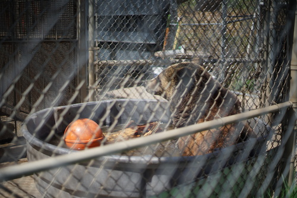

i saw this bag just in the normal purse section and i noticed the quality was pretty nice and the minimalistic logo and "made in france". i googled it and saw some stupidly high priced bags, scrolled down and saw bag around $8k (which seemed reasonable somehow after seeing $22k). i grabbed it and looked at it a bit and bought it because it was worth the risk of buying a fake for $5. before i bought it, the only thing i found questionable was the burnishing on the edges, which wasnt perfectly applied.
then i noticed this stitching after i bought it. i dont think theres any way this could be real. no fool would spend $8k on a bag with this stitching nor would it make it through QC. theres some other little questionable things about it too. theres a small bit of plastic under one of the feet, the silver color on the feet is rubbing off, the zipper end "H" is a little lumpy, the leather doesnt quite line up with the inside of the hardware, and some of the inner stitching just isnt the quality i would expect.
it was too good to be true! that being said, im still going to use it. its a super nice bag compared to what ive ever had. i would be surprised if someone didnt shell out a couple hundred for this fake.
only the thrift store profited off this purchase so i dont feel bad. if im going to buy a bootleg, this is the best way imo. bootleggers of any product dont get my money.
anyway, enjoy some cute bear pics
